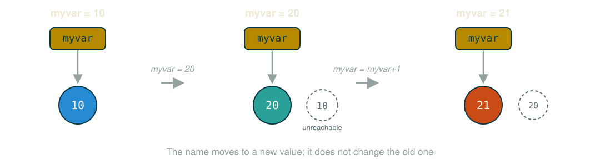
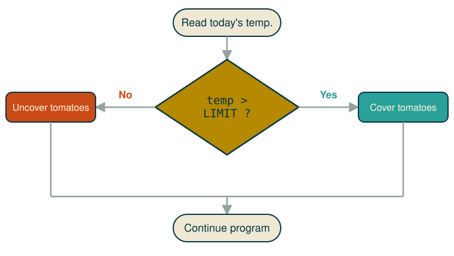

Variables, types, conditionals, and expressions
simple & chic programming language; name comes from Monty Python
easy: reading code is almost like reading English
simplicity as a result of design:
free, open source, well-supported and maintained: VS Code, Jupyter, PyPI, Anaconda, Docker…
a high-level language: a fixed alphabet and grammar to describe instructions
a program is a sequence of instructions
an interpreter is software that reads progrms and maps each instruction into low-level commands
the OS system maps low-level into executable commands for the specific hardware underneath
even adding two numbers requires visibility of RAM and the CPU:
Compiler: creates a new executable file, e.g., my_app.exe
Interpreter
Python default mode
executes the program inside its own memory
easier to set up and control (chat with Python)
#print writes to the screentext is delimited by single ('...') or double ("...") quotes.
Double quotes are needed when ' is used inside the text, called string
each print corresponds to a new line of the output interface (the terminal)
programs manipulate data that sits in memory (RAM)
variable: a string name for a memory area (think Excel cells)
our variables are akin to both parameters and variables of mathematics
a funny = symbol assigns a value to the variable on its left
an assignment statement, not a mathematical equation:

reading from the keyboard: enter/return ends the input
assign the input to a variable: <variable> = input(<prompt>)
every call to input() reads one line and always returns text
keep that in mind — it is the subject of the next section
________________ # print your name
________________ # print number 10
________________ # print the sum of 1 and 2
Integers: x=10, y=100 ...
Floats: pi=3.14, a=10.10, rate=0.0992929
Strings (text): name='Ale', age='32'
Boolean (True or False, 1 or 0): headphones=True
Python sees all keyboard input as text
to do arithmetic, convert text into a numerical representation: int(eger) or float or complex
What does it print if the user enters 10?
201010 ← correct: x is text, so *2 repeats ituse int(<value>)
What does it print if the user enters 10? 20
use float(<value>)
What does it print if the user enters 10.5? 12.5
use str(<value>)
basic data types: Integer, Float, Complex, String (text), Boolean
converting types: int(<value>), float(<value>), str(<value>)
What is the output?
So far, every instruction in our program (a .py file) has run from top to bottom
Next, execution will be driven by the actual input data — a decision diagram
here decision means evaluating a True/False question; some parts of the code might never run

| operator | meaning |
|---|---|
a == b |
equals |
a != b |
not equals |
a < b |
less than |
a <= b |
less than or equal to |
a > b |
greater than |
a >= b |
greater than or equal to |
Syntax:
Syntax:
Print "Hi" if a is greater than or equal to b.
prompt the user for a number then print:
'Positive' if the number is greater than 0'Negative' if the number is less than 0'Zero' otherwisecompiler vs. interpreter: Python is a line-by-line interpreter
variables store data: name / type / value
use input() to get data from the user, print() to output it
data types: Integers, Floats, Strings (Text), Boolean
int() converts text into numerical data; float() and char() work similarly
if / elif / else create conditional, data-driven execution
10 == 10 → True; if (a == 10): ... tests a condition; a = 10 assigns a value, it is not a condition5 != 5 → False; if (a != 0): print(10/a)A Boolean (or logical) expression evaluates to one of two states, True or False. Python’s bool type holds one of them.
please wait for all to finish
Same code, different input:
please wait for all to finish
The condition should be and, not or: